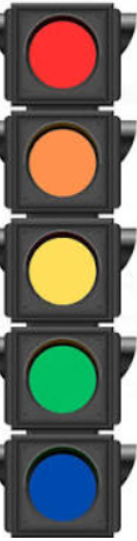

|

|
| Tipo de atención |
Area de atencion |
Tiempo de espera |
| REANIMACIÓN |
Área de reanimación |
Inmediato hasta 3 min |
| EMERGENCIA |
Área de reanimación |
Inmediato hasta 10 min |
| URGENCIA |
Consultorio de primer contacto |
Hasta 30 min |
| URGENCIA MENOR |
Consultorio de primer contacto o UMF |
Hasta 120 min |
| SIN URGENCIA |
Consultorio de primer contacto o UMF |
Hasta 180 min |
|